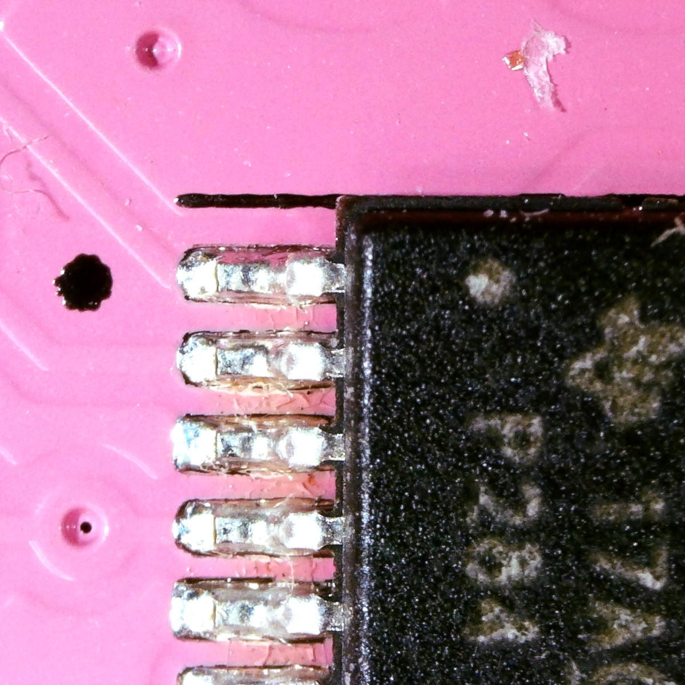

Helium self-sourcing build guide#
Welcome to the guide for self-sourcing and building Helium. This guide is for folks who want to build a Helium on their own from bare printed circuit boards and components.
Overview#
This process is not for the faint of heart! You'll need to find, purchase, assemble, and test everything yourself. If you just want to have fun putting together a kit, consider our Helium DIY kit which includes everything you need with a fully tested PCB that has all of the surface mount assembly done, leaving just the through-hole bits to you.
| Self-source | DIY kit | Fully assembled | |
|---|---|---|---|
| PCBs | ❌ | ✅ | ✅ |
| Faceplate | ❌ | ✅ | ✅ |
| Components | ❌ | ✅ | ✅ |
| Surface mount components soldered | ❌ | ✅ | ✅ |
| Fully tested | ❌ | ✅ | ✅ |
| Through hole components soldered | ❌ | ❌ | ✅ |
| Difficulty | Expert | Easy | None! |
Please read all instructions thoroughly before starting. If you have questions or run into trouble please reach out to us on discord or drop us an email at support@winterbloom.com, though note that we have limited resources for supporting self-sourced builds.
With all that said, we hope you have a great time putting this module together and a wonderful time using it. Good luck!
Skills required#
Building a Helium from scratch requires patience, care, and skill. Helium can be a great a project for learning these skills, but we do recommend being careful with some of the more expensive components. Though not strictly required, we recommend that you have:
- Experience finding and buying components from major distributors such as Digi-Key or Mouser.
- Experience submitting and buying printed circuit boards (PCBs) from services such as OSHPark or PCBWay.
- Experience preparing Gerber plot files from KiCAD design files.
- Experience soldering 0603 and TSSOP-16 components- We recommend watching tutorials on how to drag solder, such as this one from GreatScott!, and practicing with an inexpensive surface mount training board.
{kind=link}
Tools required#
Before you begin, make sure that you've got:
- Safety glasses. Yes, really. A pair like these are fine.
- Proper ventilation, like this small filtered fan.
- Tweezers.
- A temperature-controlled soldering iron, like this Hakko or the Pinecil. It is very important to use a temperature-controlled iron, since unregulated irons can easily get hot enough to damage components. You should set your iron temperature based on your solder manufacturer's recommendations.
- Solder. We suggest using soldering with "no clean" flux. If you do use a different kind of flux, be sure to carefully clean the flux residue off based on the guidelines provided by the manufacturer of your solder. For an inexpensive option, we recommend Adafruit's SAC305 solder, and for a higher-quality option we recommend Kester 275 K100LD (the same solder we use).
- Solder wick.
- Flux, preferably no-clean flux, we recommend this flux pen.
- A magnifying glass or fantastic eyesight.
If you want to be extraordinarily well prepared:
- A hot air station can be useful for undoing any soldering and is very helpful if you make a mistake like soldering a chip backwards.
- A microscope. This can be useful for identifying any issues with soldering. A relatively inexpensive option is this one.
Schematic#
Though it's not required, you may find it useful to refer to Helium's schematic during your build. You can find it by downloading either:
PCB & faceplate#
You'll need to source a printed circuit board (PCB) and faceplate for Helium. You have two options:
- You can buy them directly from Winterbloom. These are extremely high quality boards built to our specifications. This is an especially good option if you live in the United States.
- You can have them made for you by a PCB fab such as OSHPark or PCBWay. You'll generally receive multiple boards so this can be advantageous if you're planning on building several Heliums.
If you choose to have a fab make your boards, you'll need to provide Gerber files for both the board and the faceplate. We highly recommend preparing these from the KiCAD source files based on your fab's instructions. These can be found on GitHub:
- Board: github.com/wntrblm/Helium/tree/main/hardware/board
- Faceplate: github.com/wntrblm/Helium/tree/main/hardware/faceplate
However, you can also download pre-made Gerbers which should work for most fabs:
- Board: github.com/wntrblm/Helium/blob/main/hardware/board/gerbers.zip
- Faceplate: github.com/wntrblm/Helium/blob/main/hardware/faceplate/gerbers.zip
Faceplate differences
The faceplate published on GitHub differs slightly from the faceplates sold by Winterbloom in that our logo has been removed.
We recommend giving your fab the following specifications:
- Dimensions:
20 x 108 mm(PCB) and20 x 128.5 mm(Faceplate) - Thickness:
1.6 mm - Layers: 2
- Min. track width:
0.2mm/7 mil - Min. track spacing:
0.2 mm/7 mil - Min. drill:
0.4 mm - Soldermask: Matte black
- Silkscreen: White
- Surface finish: ENIG
- Copper weight:
1 oz - Substrate: FR4 TG 140 or better
Cheap fabs
There are many options for PCB fabs these days, but keep in mind that picking the absolute cheapest option does come at the cost of quality. Use with caution! If in doubt, just grab a PCB and faceplate from us.
If you're making multiple Heliums, we'd recommend picking up a solder paste stencil since it'll make assembly go a bit faster. Usually your PCB fab can provide them along with your boards.
Bill of materials#
Below is the bill of materials for Helium's electronic components, including part numbers and purchase links.
| Reference | Value & Rating | Footprint | Qty | Part no | Digi-Key | Mouser | LCSC | Notes |
|---|---|---|---|---|---|---|---|---|
| C1, C2 | 10µF 25V/±10%/X5R |
0805 | 2 | Murata GRM21BR61E106KA73K | 490-16824-1-ND | 81-GRM21BR61E106KA3K | C3909351 | 5 |
| C3-C10 | 100nF 25V/±10%/X5R |
0603 | 8 | Samsung CL10B104KB8NNNC | 1276-1000-2-ND | 187-CL10B104KB8NNNC | C1591 | 5 |
| C11 | 18pF 25V/±10%/C0G |
0603 | 1 | Yageo CC0603JPNPO9BN120 | 13-CC0603JPNPO9BN120CT-ND | 603-CC603JPNPO9BN120 | C1853092 | 5 |
| R1-R3, R5-R7, R12-R14, R17 | 51Ω 100mW/±1%/Thin | 0603 | 10 | Yageo RT0603FRE0751RL | 13-RT0603FRE0751RLCT-ND | 603-RT0603FRE0751RL | C849799 | 5 |
| R4, R8, R15, R18-R20 | 100kΩ 100mW/±0.05%/Thin |
0603 | 6 | Susumu RG1608N-104-W-T1 | RG16N100KWCT-ND | 754-RG1608N-104-W-T1 | C1722256 | 1 |
| R9-R11, R16 | 1.5kΩ 100mW/±5%/Thick |
0603 | 4 | Yageo RC0603JR-071K5L | 311-1.5KGRCT-ND | 603-RC0603JR-071K5L | C114680 | 5 |
| FB1, FB2 | 1kΩ @ 100MHz 300mA |
0603 | 2 | Murata BLM18AG102SN1D | 490-1015-1-ND | 81-BLM11A102S | C85824 | 6 |
| D1, D2 | Schottky 30V/500mA |
SOD-123 | 2 | Nexperia PMEG2005EGWX | 1727-7329-1-ND | 841-PMEG2005EGWX | C133636 | 4 |
| D3, D5, D7, D9 | Positive LED Blue/3.3V/20mA |
0805 | 4 | Kingbright APT2012VBC/D | 754-1794-1-ND | 604-APT2012VBC/D | C5879386 | 2 |
| D4, D6, D8, D10 | Positive LED Red/3.3V/20mA |
0805 | 4 | Kingbright APT2012VBC/D | 754-1133-1-ND | 604-APT2012SURCK | C5875730 | 2 |
| U1, U2, U4, U6 | OPA4991 | TSSOP-14 | 4 | TI OPA4991IPWR | 296-OPA4991IPWRCT-ND | 595-OPA4991IPWR | C2873620 | 2 |
| J1 | 2x5 2.54mm IDC Header |
- | 1 | On-shore 302-S101 | ED1543-ND | 710-61201021621 | C429962 | |
| J2-J5, J7-J10, J12-J15, J17-J20 | Audio jack | - | 16 | WQP-WQP518MA | Available from Winterbloom or Thonk | |||
Notes:
- If you are trying to reduce costs, you can swap the expensive
100kΩ 0.05%resistors for much more affordable0.1%or0.5%resistors at the cost of reduced accuracy in the voltage adder circuit. - You can also swap the expensive OPA4991 op-amp with a more affordable alternative, such as OPA4171, OPA1679, or OPA4197. We don't recommend going with TL074 due to it exhibiting phase reversal.
- The LEDs are known to work well with the faceplate's FR4 "diffusers" when using at most
10 mA. If you use different LEDs, try to get them around200 mcd @ 20 mA. You can adjust their brightness & current consumption by changing the1.5kΩresistors. - The two Schottky Barrier Diodes can generally be swapped for any
SOD-123orSOD-123FSchottky with a reverse voltage VR ≥20 V, a forward current of IF ≥500 mA, and a forward voltage VF ≤400 mV. Most otherPMEGxxxxEGparts work well. - Passive components such as resistors and capacitors often fluctuate in stock. They can be substituted with equivalent parts as specified by their rating. For capacitors, the rating is
Voltage/Tolerance/Dielectric, for example24V/±10%/C0G. For resistors, the rating isPower/Tolerance/Composition, for example100mW/±1%/Thin. If part of the rating is left off, then it doesn't matter. - The ferrite beads can be swapped with similar
0603ferrites with a DC current rating of ≥300 mA. The ones we use have an impedance of1 kΩ @ 100 MHz.
Component orientation#
Before you start placing components, take a chance to note the correct orientation for components such as diodes, LEDs, large capacitors, and ICs.
For LEDs and diodes, the PCB and the components have corresponding cathode marks on one side. LEDs typically have a green marks on the top and a green triangle on the bottom, whereas diodes have a lighter stripe drawn across one side.


Use additional caution soldering LEDs, as overheating them or melting their lens can destroy them.
Integrated circuits (ICs) also must be installed in the correct orentation. Most larger ICs have a circle in one corner that designates pin 1. This should be matched with corresponding black circle or star on the board. The assembly diagrams below also highlight pin 1 in green.

If in doubt, double check the chip's datasheet.
Assembly#
Helium has components on both sides of its board. We recommend starting with the back and then doing the front, since the majority of components are on the back. This is especially true if you're using a stencil and solder paste instead of an iron, as you'll want to be able to reflow the boards before placing the LEDs on the front side. We recommend that you start with the largest components first and work your way down to the small passives.
The interactive tables and images below show where to place each component.
- Components are grouped by value so that you can work with one strip of components at a time.
- Click on a row to highlight components on the PCB image.
- Use the checkboxes to keep track of which components you've finished.
Inspection & cleaning#
Before moving on, take a moment to carefully inspect the PCB. Keep an eye out for:
- Missing components
- Component orientation
- Poor solder joints
- Solder bridges between adjacent pins on ICs and between passives and nearby through holes
- The LEDs on the front side, since they will be very difficult to access once you add the jacks.
This is also a good chance to clean your board. We highly suggest following the instructions for your solder and flux. If in doubt, isopropyl alcohol and a cotton swab can be used to remove flux residue but look out for no-clean flux as it can turn sticky if not completely removed when exposed to alcohol.
Next steps#
Congratulations, you have completed the hardest part! All that remains is assembling the through-hole components and putting on the faceplate. You can follow the kit build guide to finish up.
Support us#
We made everything open source and put together this guide because we want you to be able to build, repair, and truly own your Helium. We don't expect anything in return, but if you'd like to show us some support feel free to:
- Give us a shoutout when you show off your work! We're on Twitter and Instagram.
- Order something cute & soft from our Threadless shop.
- Drop us a one-time tip through Ko-fi or GitHub Sponsors.